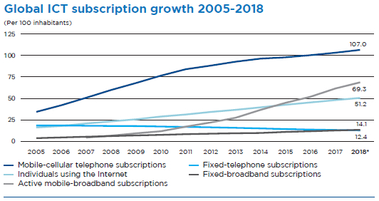
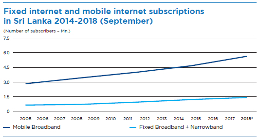
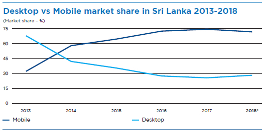
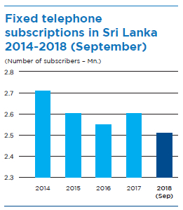
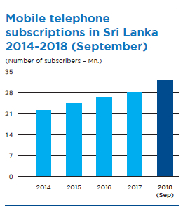
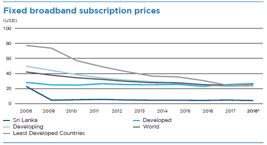

Operating Environment


The world hit a milestone in 2018 with 3.9 Billion people – 51.2% of the world’s population – now using the Internet. Growth rates in most indicators associated with the access and usage of information and communication technologies (ICTs) have moderated for most developed countries due to penetration rates reaching saturation levels. However, with 45% of individuals using the Internet in developing countries and 20% of individuals in least-developed countries (LDCs), there remains scope for growth in these countries.

Source: International Telecommunication Union
* ITU estimate
Access to broadband continues to increase as the demand for data-intensive content such as high definition streaming video grows. Globally, fixed broadband penetration has grown steadily since 2005 at a compound annual growth rate (CAGR) of 13.0%, reaching a penetration rate of 14.1% by the end of 2018. Mobile broadband subscriptions have experienced almost exponential growth since 2007 with a CAGR of 31.1% – whereas the global penetration rate was 4.0% in 2007, that rate had reached 69.3% by the end of 2018, with faster growth in developing countries. This could be due to having fixed broadband connections at home being problematic in developing countries due to the high cost and need for infrastructure to support it, whereas mobile networks tend to be the primary, if not only, means of ICT access for these countries. It is also reflective of the fact that almost the entire world’s population lives within the proximity of a mobile network signal. Today, most people can access the Internet through a 3G or better network. The prevalence of mobile devices has rendered mobile access as the dominant means through which people access telecommunication services, including the Internet – there are more mobile subscriptions than there are people on Earth. In Sri Lanka, this reality is reflected in the dramatic surge in mobile market share for Internet access against the decline in desktop market share since 2014; there are nearly four times as many mobile broadband subscriptions as there are fixed broadband and narrowband subscriptions in the country. There remains scope for Internet adoption in the country to grow however, given that the penetration rate still stands at 32%. Research indicates that fixed broadband penetration rates have a significant impact on the world economy – a 1% increase in fixed broadband penetration can increase gross domestic product (GDP) by as much as 0.08% on average, although the economic impact of fixed broadband is higher in more developed countries than less developed countries. A 1% increase in mobile broadband penetration can increase GDP by as much as 0.15%, with a higher contribution to GDP being observed in less developed countries than in more developed countries.

Source: Telecommunications Regulatory Commission of Sri Lanka
* Projection

Source: StatCounter
The fixed telephone penetration rate continues to decline, sitting at 12.4% by the end of 2018. This could be attributed to mobile devices and the mass adoption of the Internet, which has enabled alternative means of communication through Instant Messaging (IM) applications and Voice over Internet Protocol (VoIP). And while the high cost of implementing fixed telephone infrastructure in developing countries and LDCs are reasons for this declining penetration rate, the increase in “cord-cutters” (people who are cutting their fixed telephone subscriptions) and “cord-nevers” (people who have never had a fixed line subscription) in developed countries has compounded this issue even further. Asia and the Pacific experienced the largest reduction in fixed telephone subscriptions with a 42.2% decline from 2005 to 2018. Although Sri Lanka has not experienced as dramatic a decline in fixed telephone subscriptions, a decline nevertheless can be observed with a CAGR of -1.5% being observed during 2014 to September 2018.

Source: Telecommunications Regulatory Commission of Sri Lanka
* Projection
Alternatively, growth in mobile subscriptions was driven primarily by countries in Asia and the Pacific, and Africa. Mobile services have enabled opportunities for development, particularly for those who are socially and geographically isolated. Sri Lanka saw a slight growth with mobile penetration increasing from 131 to 135 subscriptions per 100 people, although this is not indicative of market saturation. ICT household surveys have estimated that as much as 76.4% of the world’s population owns a mobile phone, with many individuals having more than one subscription for various reasons such as taking advantage of competing voice or data plans or having a professional and personal subscription. However, mobile subscriptions in developed countries have begun to approach saturation levels; Europe and the Arab States have even observed a decline.

Source: Telecommunications Regulatory Commission of Sri Lanka
2019 will see the global telecom industry occupied with the launch of commercial 5G networks and solutions, the Internet of Things (IoT), cybersecurity, and difficult economic conditions to weather through. The industry is dealing with significant capital expenditure and trying to convert it into operating expenditure, and lower consumer spending power will have an impact. 5G technology will have a globally transformational impact on cities, vehicles, robotics, and even sectors critical to Sri Lanka such as agriculture, education, and healthcare. With approximately 72 operators testing 5G in 2018, 2019 is expected to be the year that 5G wide-area wireless networks are deployed on a large scale; as many as 25 operators could launch 5G services in 2019. SLT successfully trialled Pre-5G LTE Advanced Pro technology in the field in 2017 in anticipation of a 2020 launch.

Source: International Telecommunication Union

Source: International Telecommunication Union
Sri Lanka ranked 85th out of 140 on the World Economic Forum’s Global Competitiveness Report in 2018 and 109th out of 140 for ICT adoption. The heavy regulation and taxation of the ICT sector continues to challenge the industry’s push to boost the competitiveness and ICT adoption of the Nation. The recent reduction of the telco levy from 25% to 15% will ease the burden on customers and help to prop up the ICT sector in the Nation. The Government also removed floor rates on voice calls in an effort to promote cost optimisation and assist the industry in expanding market share; yet, this move is expected to have limited impact on growth due to the impact of OTT applications such as WhatsApp, Viber, and Skype eating into revenues from voice calls. Similar to trends seen elsewhere in the world, the local industry is also seeing consolidation efforts by players seeking to reduce infrastructure development and tax costs and increase market share in what is already a highly competitive and price-sensitive market.
| Voice and Value-Added Services (VAS) | Mobile and fixed line International direct Dialling (IDD) calls and Data-related services | |
| Telecommunication Levy | 15.31% | – |
| Recovery in lieu of Nation Building Tax (NBT) | 2.39% | IDD – 2.14% Internet – 2.08% |
| Other Government Levy | 2.04% | 2.04% |
| Effective Value Added Tax (VAT) | 17.96% | IDD – 16.08% Internet – 15.62% |
| Total Effective Tax | 37.70% | IDD – 23.26% Internet – 19.74% |
Other challenges persist for the industry. The cellular tower levy of LKR 200,000 per tower per annum that took effect in January 2019 comes at a particularly inopportune time when the industry is expanding 4G coverage and looking to adopt and invest in 5G technology in the near future. The levy adds to what is already a costly investment: a tower costs over LKR 10 Mn. to build and LKR 115,000 in monthly maintenance. Moreover, the expansion of the fibre optic network will continue well into 2020-2021, with the objective of increasing the number of connected homes from the existing 70,000 to about one million homes. The capital expenditure required for infrastructure development combined with high competition and low tariffs, although challenging for the industry, has not slowed down the speed of development. Customers ultimately receive the maximum benefit from the industry’s push to strengthen the Nation’s ICT competitiveness and bolster economic growth.